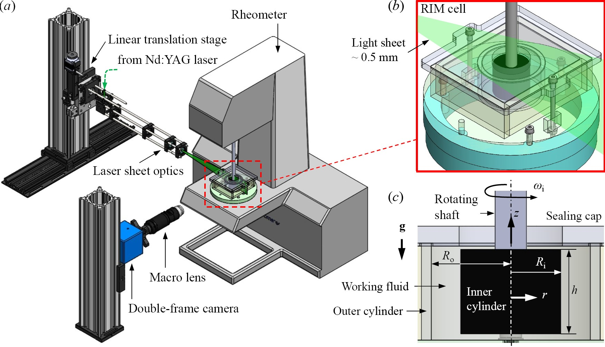
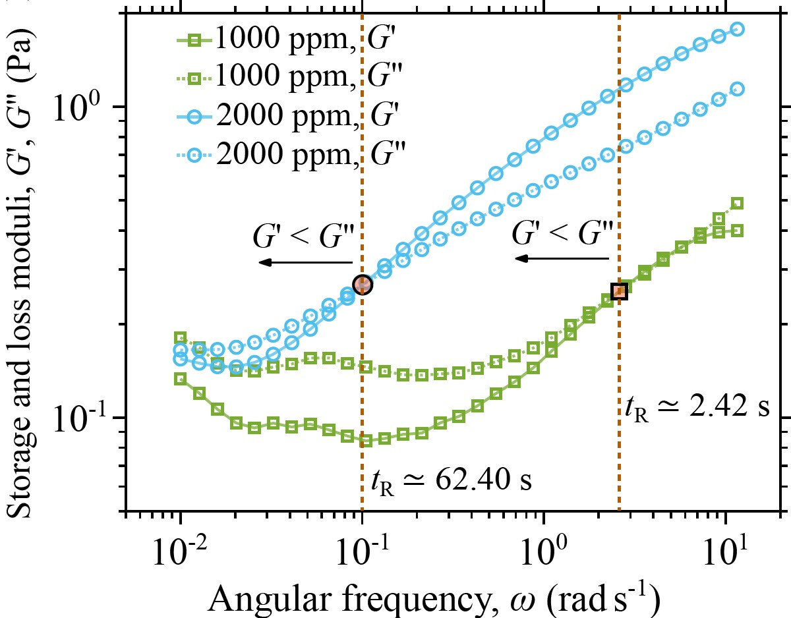
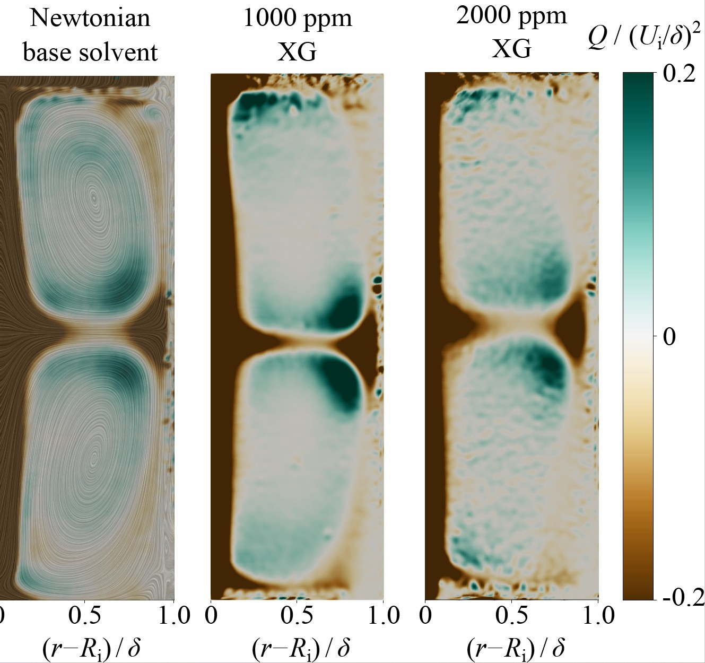
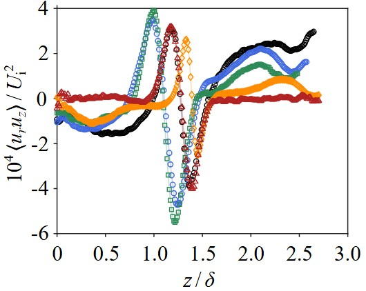

Shear-Thinning Polymer Flow in a Short Taylor–Couette Apparatus
Taylor–Couette flow, generated between concentric rotating cylinders, is a canonical platform for studying hydrodynamic instability, coherent vortices, and transition to turbulence. Most classical descriptions assume long cylinders and Newtonian fluids. In this project, we examined a much more strongly confined system, with an aspect ratio of only $\Gamma = 2.65$, containing xanthan-gum solutions whose apparent viscosity decreases substantially with increasing shear rate.
I conducted this research during my postdoctoral appointment in Professor Peichun Amy Tsai’s laboratory at the University of Alberta. Working with Junyi Yang, Lap Au-Yeung, and Professor Tsai, I developed the experimental methodology, performed the rheological and flow analysis, and created numerical tools for interpreting the strongly heterogeneous non-Newtonian flow.
The combination of geometric confinement and shear-thinning rheology creates a particularly challenging flow. The stationary end walls produce strong secondary circulation through Ekman pumping, while the rotating inner cylinder generates a highly nonuniform shear field across the annular gap. Because the polymer solution responds differently in high- and low-shear regions, its apparent viscosity cannot be represented by a single constant value.
To resolve these dynamics, we used planar particle image velocimetry (PIV) in the radial-axial plane of a purpose-built short Taylor–Couette cell. The inner cylinder was driven by a commercial rheometer, providing precise feedback control of its rotational speed. For each condition, 10,000 image pairs were acquired to obtain well-converged mean-flow and fluctuation statistics across Newtonian reference fluids and xanthan-gum solutions ranging from 200 to 2,000 ppm.
Because planar PIV directly measures only the radial and axial velocity components, I also developed a coupled numerical framework to reconstruct the dominant out-of-plane azimuthal velocity. The measured secondary-flow fields were incorporated into the axisymmetric azimuthal momentum equation, while the local Carreau viscosity was iteratively updated using the complete reconstructed rate-of-strain field.
Engineering Challenge
High-resolution PIV through a curved acrylic cylinder is strongly affected by refraction, while adding shear-thinning polymers changes both the optical properties and rheology of the working fluid. I developed two refractive-index-matched fluid systems and a rectangular external viewing bath to minimise optical distortion while preserving the required non-Newtonian behaviour. This enabled quantitative imaging across the complete radial-axial section of the short Taylor–Couette cell.
Measurement Principle
A rheometer-driven inner cylinder generates controlled Taylor–Couette flow within a stationary acrylic outer cylinder. A thin laser sheet illuminates tracer particles in the radial-axial plane, while double-frame imaging resolves the secondary velocity field. Ensemble and instantaneous PIV analyses quantify mean circulation, coherent vortices, Reynolds stresses, and turbulent fluctuations across Newtonian and shear-thinning working fluids.
Key Design Features
- Short Taylor–Couette geometry: Aspect ratio Γ=2.65, radius ratio η=0.72, and 6.23 mm annular gap.
- Rheometer-controlled rotation: Commercial Anton Paar rheometer provides precise feedback control.
- Optically clear cell: Black-anodised inner cylinder suppresses reflections; acrylic outer cylinder provides full optical access.
- Rectangular RIM bath & dual fluids: Custom index-matched formulations for internal fluid and outer bath.
- Controlled xanthan-gum rheology: Solutions from 200 to 2,000 ppm characterized via Carreau constitutive model.
- High-resolution PIV & large ensembles: 10,000 image pairs per condition for converged turbulence statistics.
- Azimuthal-velocity reconstruction: Coupled nonlinear solver reconstructs and local viscosity fields.
Experimental & Computational Flow Analysis
Refractive-Index-Matched PIV Platform
A commercial rheometer drives the black-anodised inner cylinder while dual refractive-index-matched fluids and a rectangular viewing bath eliminate curved-wall optical distortion.

Shear-Dependent Fluid Rheology
Rheology of xanthan-gum solutions (200–2,000 ppm) demonstrate shear-thinning and viscoelastic behaviours. More concentrated solution (2000 ppm) shows a relatively longer relaxation time.

Polymer-Dependent Coherent Flow Structure
Slices of Q-criterion on the PIV-plane quantifying how shear-thinning polymer concentration reorganises Taylor vortices and secondary momentum transport.

Spatial Rheological Compartmentalisation
Variations of the mean Reynolds shear stress, normalised by the squared inner velocity, in the axial direction normalised by the gap size.

Research Team & Institutional Acknowledgements
Research Team: Reza Azadi, Junyi Yang, Lap Au-Yeung, and Professor Peichun Amy Tsai
Institution: Department of Mechanical Engineering, University of Alberta, Edmonton, Canada
My Contribution: Experimental methodology development, refractive-index matching, rheological characterisation, PIV processing, numerical reconstruction solver development, physical interpretation, and manuscript drafting.
Publications & Related Research
Research findings from this project contribute to ongoing investigations on non-Newtonian fluid mechanics, turbulent drag reduction, and complex interfacial flow phenomena.